はじめての1曲「そらまで」
4/4拍子、BPM 100の4小節を作ります。コードとストロークは一括入力し、歌詞とメロディは各拍の先頭に入れます。
1. 曲を作る
「メニュー」→「新しい曲を作成」を開き、曲名に「そらまで」、BPMに100を入力します。拍子は4/4です。右の譜面に曲名とBPMが反映されたことを確認します。この画面を開いたまま、手順2に進みます。
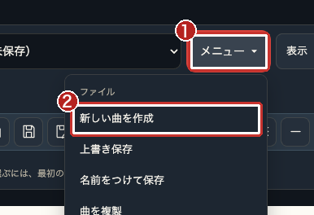
①メニュー ②新しい曲を作成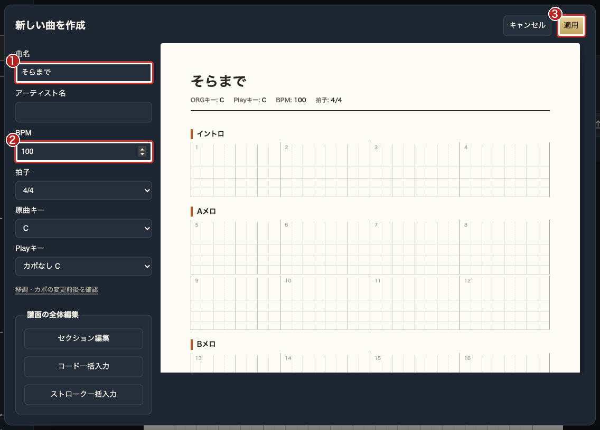
①曲名 ②BPM ③セクション編集 ④コード一括入力 ⑤ストローク一括入力 ⑥譜面プレビュー
2. 練習用の4小節を用意する
「新しい曲を作成」画面の左下で「セクション編集」（手順1の③）を押します。開いた画面の上部で「サビ」を選び、「セクションを削除」を押し、確認画面で曲中のどの部分を削除するか確かめて確定します。同じ操作で「Bメロ」と「Aメロ」を削除し、「イントロ 4小節」を残します。
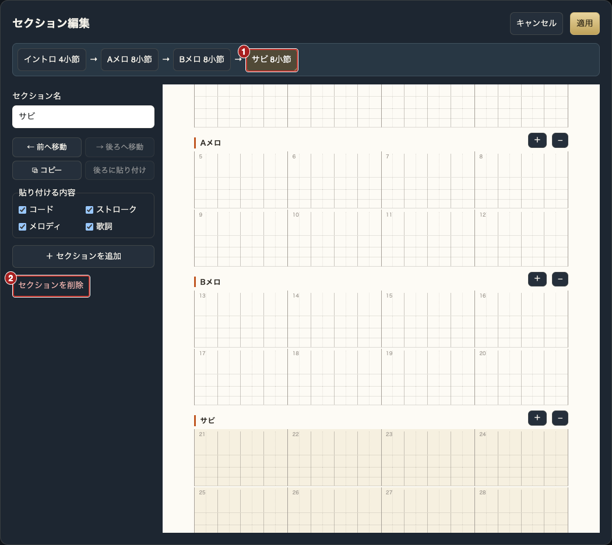
①サビを選ぶ ②セクションを削除
残した「イントロ」のセクション名を「うた」に変えます。上部に「うた 4小節」だけが並んだら、右上の「適用」で「新しい曲を作成」画面に戻ります。
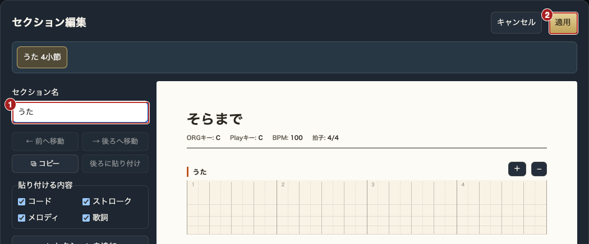
①セクション名 ②適用
3. コードを一括入力する
「新しい曲を作成」画面の「コード一括入力」（手順1の④）を押します。「1950s」を選び、「曲全て」にチェックして「適用」を押します。下の譜面に C・Am・F・G が1小節ずつ並んだら、右上の「OK」を押して作成画面に戻ります。
 ①1950s ②曲全て ③適用 ④OK
①1950s ②曲全て ③適用 ④OK
4. ストロークを4小節すべてに入れる
「新しい曲を作成」画面の「ストローク一括入力」（手順1の⑤）を押します。「4分連続」を選び、ここでも「曲全て」をチェックして「適用」。3・4小節目まで各小節に4つずつ ↓ があることを確認し、「OK」で作成画面に戻ります。
 ①4分連続 ②曲全て ③適用 ④OK
①4分連続 ②曲全て ③適用 ④OK
作成画面のプレビューで、4小節のコードとストロークを確認します。ここで右上の「適用」を押して、作った譜面を開きます。
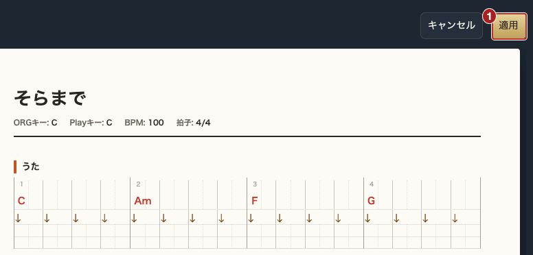
①作成画面の「適用」
5. 小節編集を開く
譜面の1小節目をクリックし、上部カードの「編集」を押します。編集画面の上で「4小節」を選ぶと、4小節分を横に並べて入力できます。
 ①1小節目 ②編集
①1小節目 ②編集
6. 歌詞を入れる
歌詞行の各拍の先頭に、ひらがなを1文字ずつ入力します。1小節目なら、1拍目「あ」、2拍目「さ」、3拍目「の」、4拍目「ひ」です。8分グリッドでは各拍の左側のマスを使います。右へスクロールしながら、下の表のとおりに4小節分を入力します。
各列が1拍です。上段が歌詞、下段がメロディです。| 小節・コード | 1拍目 | 2拍目 | 3拍目 | 4拍目 |
|---|
| 1・C | あ
ド | さ
ミ | の
ソ | ひ
ミ |
|---|
| 2・Am | か
ラ | ぜ
ソ | の
ミ | ね
ド |
|---|
| 3・F | そ
ファ | ら
ラ | ま
ソ | で
ファ |
|---|
| 4・G | と
ソ | ど
レ | け
シ | て
ソ |
|---|
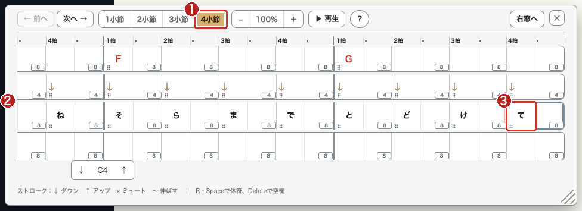
①4小節表示 ②1拍目「あ」 ③4拍目「ひ」
7. メロディを入れる
メロディ行で、歌詞と同じ位置に音名を入力します。「ファ」は1つのマスにまとめます。4小節分を入力したら編集画面を閉じ、歌詞の真下に各音が並んでいることを確認します。
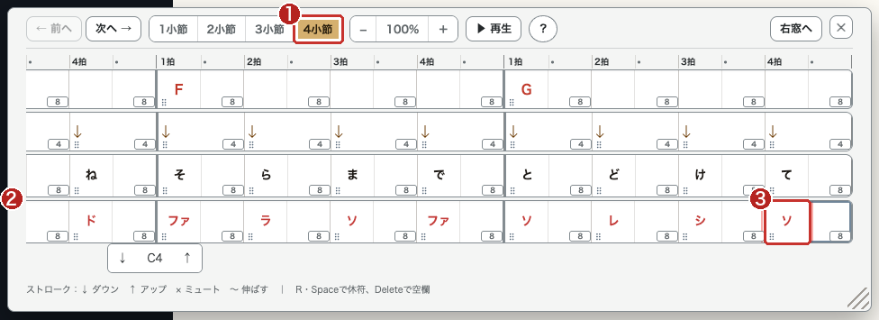
①4小節表示 ②1拍目「ド」 ③4拍目「ミ」 4小節すべてにコードと4本の矢印があり、その下に歌詞とメロディが並びます。
4小節すべてにコードと4本の矢印があり、その下に歌詞とメロディが並びます。
8. 編集用のファイルを保存する
Chrome・Edgeでは「メニュー」→「名前をつけて保存」でフォルダとファイル名を選びます。Safari・Firefoxでは同じメニューを開き、説明文中の「JSONを書き出す」を押します。このファイルは「ファイルを開く(JSON)」で再編集できます。
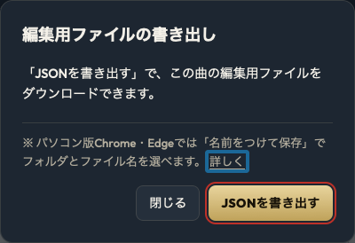
Safari・Firefoxでは説明文中の「JSONを書き出す」を押します。Safariで端末内の保存先を選ぶ方法
9. ビューワーに書き出して再生する
メニュー → 譜面ビューワーに書き出す。ビューワーのライブラリ内のフォルダを選びます。最初は「未分類」のまま「書き出す」を押します。完了画面の「譜面ビューワーに移動」を押し、下の「再生」で演奏を聴きます。同じボタンで一時停止できます。
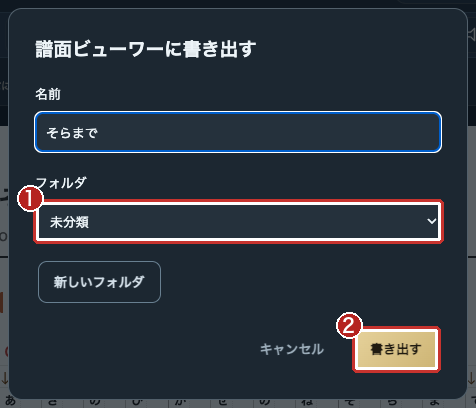
①ライブラリ内のフォルダ ②書き出す ①譜面ビューワーに移動
①譜面ビューワーに移動 ①再生・一時停止
①再生・一時停止
曲を作る・開く
- 新しく作る
- 「メニュー」または曲名欄の「その他のファイル操作…」で「新しい曲を作成」を選びます。4小節の練習曲を作る手順
- このブラウザの曲を開く
- 左上の曲名欄を開き、一覧から曲名を選びます。
- 端末のJSONファイルを開く
- 曲名欄の「その他のファイル操作…」→「ファイルを開く(JSON)」を選び、保存しておいた編集用ファイルを開きます。

- 1曲の切り替え・保存場所・ファイル一覧
- 2曲の作成や書き出し
- 3現在の曲を保存
- 4ツールの表示項目を選択
上部カードの右下をドラッグすると、文字とボタンの大きさをまとめて調整できます。右下をダブルクリックすると標準に戻ります。左上の曲名欄から保存場所の確認とファイル一覧・削除ができます。新規作成、保存、複製、読み込み、書き出し、印刷は「その他のファイル操作…」を開いて選びます。「メニュー」からも同じ操作ができます。ツールの各アイコンにポインターを置くと操作名が出ます。「…」で表示項目を選び、アイコンのドラッグで順番を変更できます。最初は、上部カードに専用ボタンがある保存・表示・全画面・拡大縮小・ツールエリアのアイコンを省いています。「すべて表示」でメニューの全操作をアイコンにできます。
保存場所・複製・変更履歴
ブラウザによる保存方法の違い
Google Chromeをおすすめします。「保存」でフォルダを選び、同じファイルに上書きできます。 Safari・Firefoxの「保存」は、このパソコンに記録した曲を更新します。
- Google Chrome・Microsoft Edge（パソコン）
- 最初の「保存」でフォルダとファイル名を選びます。次からは「保存」を押すと、そのJSONファイルに上書きします。
- 保存画面の「警告：このサイトはあなたが行った編集内容を参照できます」は、選んだ譜面ファイルを開き、編集内容を書き込むための確認です。ブラウザが表示する通常の確認です。アプリやブラウザに問題があるわけではありません。
Chrome公式の説明（日本語）
アプリの案内は毎回、30日ごと、または非表示にできます。「この曲の保存場所」の「保存時の案内設定」から変更できます。
- Safari・Firefox
- 「保存」を押すと、曲はこのパソコンに保存されます。Safari・Firefoxが、このサイト専用のデータとして管理します。この操作で曲がインターネットに送られることはありません。次は同じブラウザの左上の曲名一覧から開けます。
- 曲をサイトデータから別のフォルダへ直接移動することはできません。「メニュー」→「JSON書き出し」で編集用ファイルを取り出せます。保存先はブラウザのダウンロード設定で選べます。編集を続けたら、最新版をもう一度書き出してください。
- 保存／名前をつけて保存
- ファイル保存に対応したPCブラウザでは、初回の「保存」で場所と名前を選びます。次の「保存」は関連付けたファイルを更新します。「メニュー」→「名前をつけて保存」で別名を選ぶと、それ以降の保存先は新しいファイルになります。左上の曲の選択欄にはファイル名が表示され、譜面のタイトルはそのままです。
- 保存場所
- 保存後の「保存場所」、または曲名欄の「この曲の保存場所」で確認できます。Chrome・Edgeでファイルに保存した曲はファイル名が表示されます。保存先のフルパスはブラウザから取得できません。「保存フォルダを開く」でファイル選択画面に保存先を表示し、キャンセルで戻れます。サイトデータに保存した曲を別のフォルダで扱うには「JSON書き出し」を使います。
- Safariで端末内のフォルダに保存する
- 「保存」はこのMacに曲を記録し、Safariがサイトデータとして管理します。サイトデータを消す前や、別の端末に渡すときは「JSON書き出し」で編集用ファイルをダウンロードしてください。
- Mac Safari → 設定 → 一般 → ファイルのダウンロード先で、保存時に毎回確認する設定か、Mac内のフォルダを選びます。
再編集は曲名欄の「その他のファイル操作…」→「ファイルを開く(JSON)」から。編集を続けたあとは、更新版のJSONをもう一度書き出してください。
- 不要な曲を削除する
- 曲名の選択欄で「ファイル一覧・削除…」を選び、対象の曲の「削除」を押します。パソコン版Chrome・Edgeでは、保存先や読み込み元を記憶している曲には「元のフォルダを開く」が表示されます。ファイル選択画面で場所を確認したら「キャンセル」で確認画面に戻れます。確認画面で対象の名前を確かめ、「削除する」を押します。続けて別の下書きも整理できます。ファイル一覧や保存場所は、カードの外側をクリックして閉じられます。新規作成したままの曲は「削除する」で下書きも消えます。ブラウザ内に保存した曲は、保存データと下書きの両方が削除されます。PCに書き出したJSONは手元に残ります。
- 曲を複製
- メニューから「曲を複製」を選び、別の曲として作業を続けます。編曲案を分けたいときに使います。
- 拡大したフォームの運指を変える
- 譜面上のフォームを開き、押さえている指をクリックします。希望の指になったら「譜面に反映」を押します。下のフォーム一覧では、先に「編集する位置」で「全て」または特定の小節を選べます。
- 取り消し・履歴
- 表示設定、曲情報・キー／カポ、ストロークのパターン、拡大フォームの「ここで運指を調整」では、確定前に Ctrl＋Z（Macは⌘Z）で一手戻せます。Shiftを加えるとやり直せます。未保存の曲から新規作成・ホーム・戻るを選ぶと、保存するか確認します。「保存せず続行」を選んでも下書きは残り、ホームから戻ると続きが開きます。
- 保存ボタンの横の矢印で編集を一手ずつ取り消し・やり直しできます。「履歴」で過去の状態を選ぶと譜面を確認できます。編集履歴がいっぱいになると、古い操作から順に取り消しの対象外になります。「この時点に戻す」を確定すると、それ以降の履歴が失われます。ファイルへ反映するには保存します。
変更履歴から戻す
上部カードの「履歴」を開きます。例では「キー・カポを変更」する前の譜面を確認します。
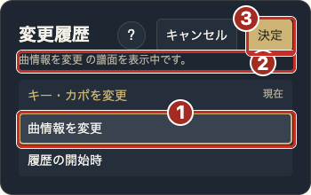
- 一覧で見たい時点を選びます。 「現在」の一つ下にある「曲情報を変更」をクリックします。
- 一覧の上に表示された時点と、背後の譜面を確認します。 別の行もクリックして見比べられます。確認だけなら「キャンセル」で元の譜面に戻ります。
- 選んだ時点に戻すには「決定」を押します。 続いて、消える履歴の件数が表示されます。
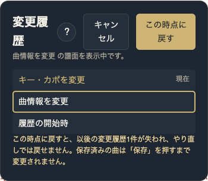
「この時点に戻す」で復元を確定します。これより後の履歴は消え、やり直しはできません。復元した曲を保存するには、上部カードの「保存」を押します。
曲情報・キー・カポ
上部の「メニュー」→「曲情報」を開きます。譜面のタイトルやBPMからも開けます。

- 左上に曲名とアーティスト名を入力します。 譜面の一番上に表示される名前です。
- 左側でテンポと拍子を設定します。 例では「BPM」に112を入力し、「拍子」で4/4を選んでいます。その下で原曲キーとPlayキーを選べます。
- 右の譜面で確認します。 タイトルの下に「BPM: 112」「拍子: 4/4」と表示されます。
- 右上の「適用」を押します。 曲情報が更新され、元の譜面に戻ります。
「適用」した後の譜面の見出し。曲を保存するには、上部カードの「保存」を押します。
ORGキーは原曲の調、Playキーは演奏に使うキー・カポの組み合わせです。「移調・カポの変更前後を確認」またはメニューの「キー・カポ」を開き、コードの変更前後を見比べて適用します。左下の「譜面の全体編集」からは、入力内容を反映して「セクション編集」「コード一括入力」「ストローク一括入力」へ進めます。
キー・カポ
「メニュー」→「キー・カポ」を開きます。「曲情報」の「移調・カポの変更前後を確認」からも開けます。
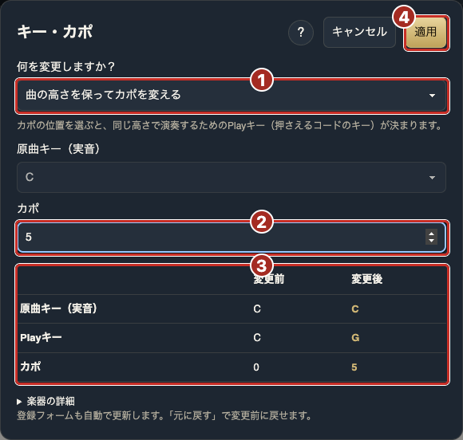
- 上で変更方法を選びます。 今の高さで演奏する例なので「曲の高さを保ってカポを変える」を選びます。
- 「カポ」に5を入力します。 カポなしにするときは0です。
- 表の「変更後」を確認します。 原曲キー（実音）はCのまま、PlayキーはGになります。5フレットにカポを付け、Gの押さえ方でCが鳴ります。
- 右上の「適用」で確定します。 確認だけなら「キャンセル」で閉じます。
歌う高さも変えたいとき
①で「曲の高さを変える（移調）」を選び、「原曲キー（実音）」で目標のキーを選びます。
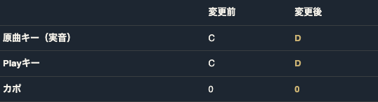
カポなしでCからDに移調する例。原曲キーとPlayキーがともにDになることを確認して「適用」を押します。
小節を選ぶ・移動する
小節をクリックすると上部カードに小節操作が出ます。続けて同じ小節をクリックするか「編集」で入力へ進みます。複数小節は先頭から末尾へドラッグするか、最初をクリックして最後をShift＋クリックします。譜面の余白で選択を解除します。
- 小節追加・複製
- 選択位置の後ろに空の小節、または選んだ内容のコピーを追加します。
- コピー・貼り付け
- 元の範囲をコピーし、貼り始める位置を選びます。「上書き貼り付け」は既存の位置を置き換え、「挿入して貼り付け」は後ろの小節を送ります。
- 移動
- 前へ・後ろへ移動するボタンで並びを変えます。セクション境界では移動後の所属も確認します。
- 削除
- 「枠を残して削除」は譜面上の場所を空き枠として残します。「詰めて削除」は後ろの小節を前へ詰めます。空き枠は再生されません。
小節編集と鍵盤・フォーム入力
譜面で直したい小節を選び、「編集」を押します。画像は「海辺の散歩」の最初の小節です。
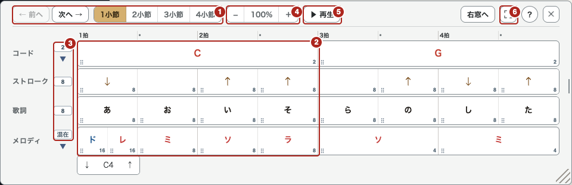
- 編集する小節を選びます。 「1小節」〜「4小節」で表示数を選びます。「前へ」「次へ」は表示数ずつ移動します。9〜12小節を表示中なら、次は13〜16小節です。最後の小節の行末でEnterを押すと、次の範囲の先頭へ進みます。
- 入れたい拍のマスをクリックします。 図の1拍目なら、コード行に「C」、歌詞行に「あ」と入力します。ストローク行はDで↓、Uで↑を入れます。
- 行名の横で入力方法を選べます。 数字でその行の音価を変えます。▼を押すと、コード行はフォーム、メロディ行は鍵盤が開きます。
- 上の「再生」で確かめます。 聴き直したいところを修正し、終わったら右上の「×」で譜面に戻ります。
−／＋でマスの横幅を変え、「右窓へ」で編集画面の位置を切り替えられます。
- コード本棚のフォームを取り込む
- コードの編集カードで「コード本棚を開く」→「本棚からフォームを書き出す」を押します。別タブの本棚でコードを選び、元のタブの「JSONファイルを読み込む」で取り込んでください。コード図を押すと、選んだマスにコードとフォームが入ります。ベース・テンションに指定した運指も使えます。
- コード・フォーム
- コード行のマスをクリックしてEmやG/Bなどを入力します。選択中のマスをもう一度クリックすると文字単位で直せます。行名の▼からコード・フォームを選べます。譜面または譜面下のフォーム一覧で図をクリックし、拡大図の「編集」を押すと、そのコードの小節編集が開きます。「詳細設定」を押すと、指板が「運指」で開きます。一覧で同じフォームが複数箇所にあるときは、「編集する位置」で小節と拍を選ぶと、その箇所だけを編集できます。「全て」を選んで「編集」を押すと、小節編集と同じフォームパネルが単独で開きます。コード名やダイアトニックコードを選び、図または「詳細設定」の指板で押さえ方を変更できます。最後に「反映」を押します。「コード本棚に保存」を押すと、コードクルーズが別タブで開きます。フォルダを選び、「保存する」を押すと本棚に追加されます。「詳細設定」の「表示範囲」は、押さえる位置に合わせて自動で決まります。指板の番号帯にある左右のつまみをドラッグするか、「開始」「終了」にフレット番号を入力すると、そのフォームの範囲を指定できます。「自動」にチェックを戻すと解除できます。
- ストローク
- Dは↓、Uは↑、Xはミュート。マスの再クリックや上下キーでも切り替えられます。〜は直前の音を伸ばす指定です。RまたはSpaceは休符、Delete／Backspaceは空欄です。長い音価の記号も弾き始める位置を示します。
- 歌詞・メロディ
- 歌い始めるマスに文字を入れます。メロディは行名横の▼から鍵盤でも入力できます。音の高さを確認して試聴します。表示設定では歌詞・メロディの文字サイズと字間を個別に調節できます。
- 行とマスの音価
- 編集画面に並ぶ小節は、譜面上でも色が付きます。左の行名横で、表示中の小節の行全体を同じ音価にそろえます。横にスクロールしても行名は左端に残ります。1マスだけ変えるには右下の数字を選びます。全音符から32分音符まで選べます。「1」は全音符、「8」は8分音符、付点音符は音価を選び、「付点」にチェックして「適用」を押します。「8·」は付点8分音符です。全音符と32分音符では「付点」を選べません。例えば後半の8分を16分にすると、1拍に8分・16分・16分が並び、行名横は「混在」になります。メロディはマスの長さだけ鳴り、2分なら「〜」を入力せずに2拍伸びます。別の音の開始位置をまたぐ長さは選べません。音価の変更も取り消し・やり直しができます。
- マスのコピー・移動
- 同じ行をドラッグまたはShift＋クリックで選び、⌘／Ctrl＋C、貼り始めるマスで⌘／Ctrl＋V。伸ばしは先頭の音と一緒に選びます。入力済みマスの左下の点をドラッグすると移動先を上書きします。
コードとフォームの一括編集
譜面下の「コードフォーム一覧」で、複数の箇所に使っているフォームをクリックします。拡大画面で「編集する位置」を「全て」にして、左上の「編集」を押します。
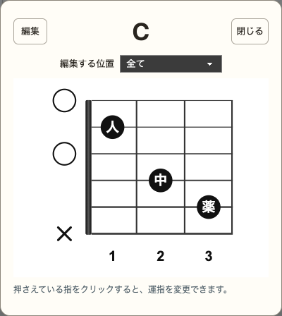
特定の1箇所だけを変えたい場合は、「全て」の代わりに小節と拍を選びます。
同じフォームを使う5箇所を、CからDmに変える例
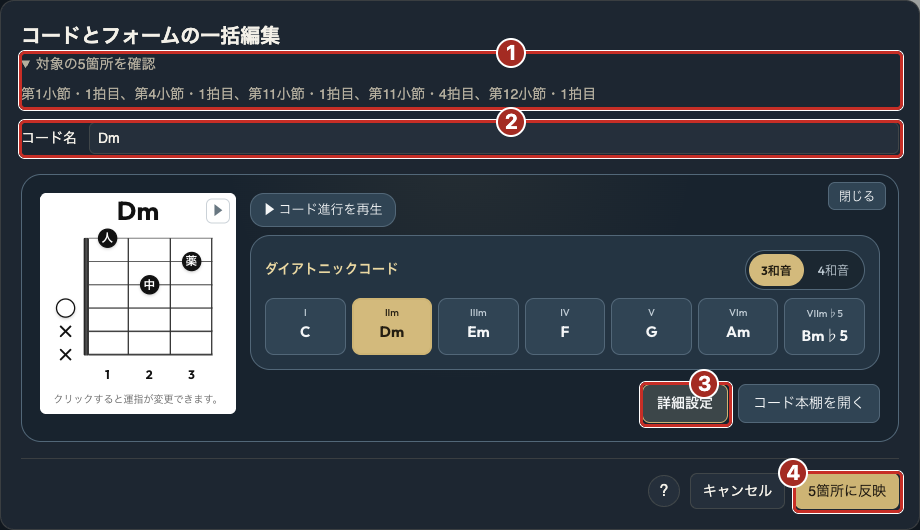
- 上の「対象の5箇所を確認」を開きます。 第1小節・1拍目など、変更される位置が並びます。対象は一覧で選んだフォームを使う箇所です。
- コード名を変えます。 「コード名」にDmと入力してEnterを押すか、候補の「Dm」をクリックします。左の図がDmに変わります。
- 押さえ方を調整します。 「詳細設定」で指板を開きます。左のコード図では運指を変えられます。表示されたフォームでよければ、そのまま進みます。
- 右下の「5箇所に反映」を押します。 対象のコード名とフォームがまとめて譜面に反映されます。
セクションを組み立てる
上部カードの「メニュー」→「セクション編集」を開きます。譜面の「イントロ」「Aメロ」などの見出しからも開けます。

- 上の列で選ぶ。 選んだセクションには色が付きます。並べ替えたいときは、ここでドラッグします。
- 左で編集する。 セクション名を入力したり、「前へ移動」「後ろへ移動」で順番を変えたりできます。「セクションを追加」は曲の末尾に追加し、「セクションを削除」は選んだ部分を小節ごと取り除きます。
- 譜面の＋／−で小節数を変える。 変更したいセクションの見出しの右端を使います。＋で末尾に1小節追加し、−で最後の1小節を削除します。
- 右上の「適用」で確定する。 編集をやめるときは「キャンセル」を押します。
Aメロをサビの後ろにもう一度入れる
例として、Aメロのコードとストロークだけをコピーし、歌詞とメロディは空けておきます。
1. コピー元を選ぶ上の「Aメロ」をクリックし、左の「コピー」を押します。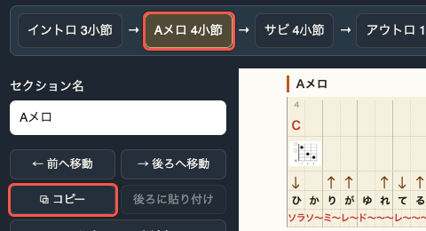
2. 入れたい場所を選ぶ上の「サビ」をクリックし、左の「後ろに貼り付け」を押します。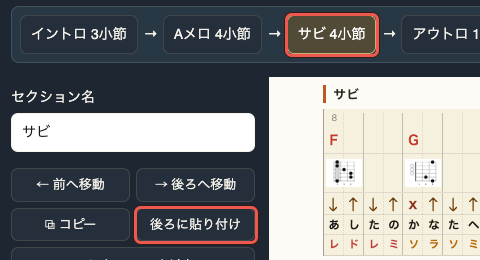
3. パートを選んで挿入する「コード」「ストローク」にだけチェックを付けて「実行」を押すと、サビの次に「Aメロ コピー」が入ります。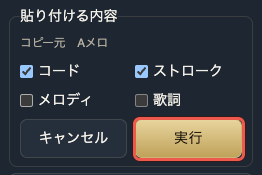
4. 名前と順番を確認して確定する左の「セクション名」で「Aメロ コピー」を「2番Aメロ」に変更します。上の列でサビの次にあることを確認し、右上の「適用」を押します。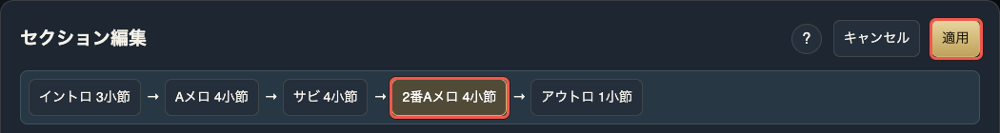
キーで操作する場合は、上の列でコピー元を選んで Ctrl＋C、挿入先を選んで Ctrl＋V を押します。適用前は Ctrl＋Z で一手戻り、Shiftを加えるとやり直せます。MacではCtrlの代わりに⌘を使います。
左下の「譜面の全体編集」からコードやストロークの一括入力へ進むと、編集中のセクション変更も曲に反映されます。
コード・ストローク一括入力
コード一括入力
「メニュー」から「コード一括」を開きます。ここではAメロの4〜7小節に「王道進行」を入れます。
 ① 進行を選ぶ ② 入力先を選ぶ ③ 適用して確認 ④ 曲に反映
① 進行を選ぶ ② 入力先を選ぶ ③ 適用して確認 ④ 曲に反映
① 進行を選ぶ → ② 入力先を選ぶ
上の「プリセット」で「王道進行」を選び、下の「曲の譜面」で4小節目をクリックします。4小節分の進行なので、4〜7小節に色が付きます。他の長さで繰り返すときは最初から最後の小節までドラッグします。セクション全体に入れるときは見出しをクリックします。
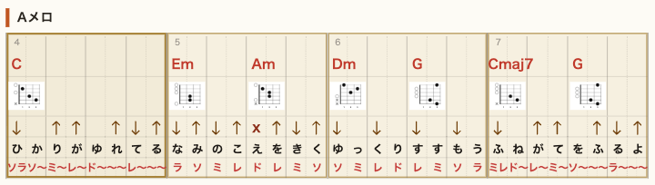
「適用」を押す前。色が付いた小節のコードが入力対象です。
③「適用」で確認 → ④「OK」で曲に反映
中央に「4〜7小節目に入力」と出たら「適用」を押します。下の譜面でコードが F・G・Em・Am の順に入ったことを確認し、右上の「OK」を押します。
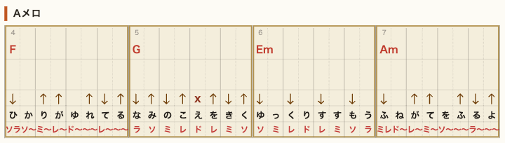
「適用」を押した後。下の譜面には新しい進行が表示されます。
選んだ小節のコードをまとめて消すには、範囲を選んでDeleteキーを押します。
ストローク一括入力
「メニュー」から「ストローク一括」を開きます。ここではイントロの2〜3小節を「基本の8分」に変えます。
 ① パターンを選ぶ ② 範囲を選ぶ ③ 適用して確認 ④ 曲に反映
① パターンを選ぶ ② 範囲を選ぶ ③ 適用して確認 ④ 曲に反映
① パターンを選ぶ → ② 入力先を選ぶ
上の「プリセット」で「基本の8分」を選びます。パターンを調整したいときは、上のマスをクリックし、Dでダウン、Uでアップを入力できます。
下の「曲の譜面」で2小節目から3小節目までドラッグし、両方の小節に色が付いたところで離します。セクション全体なら見出しをクリックし、全曲なら「曲全て」にチェックを入れます。
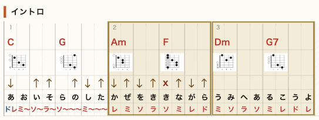
「適用」を押す前。2小節目には元のストロークがあり、3小節目のストロークは空欄です。
③「適用」で確認 → ④「OK」で曲に反映
中央に「2〜3小節目に入力」と出たら「適用」を押します。下の譜面にダウン（↓）とアップ（↑）が交互に並びます。「曲の譜面」の左にある「再生」で試聴し、右上の「OK」で確定します。
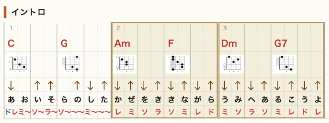
「適用」を押した後。選んだ2小節のストロークが置き換わります。
自分のプリセットを保存する
手持ちの進行やリズムは「譜面からプリセット追加」で元の範囲を選び、内容を整えて名前を付けます。「プリセットを編集」ではパターンを変更できます。ストロークは対応するリズムクルーズのプリセットJSONも読み込めます。再利用する素材は「プリセットに保存」してください。
譜面の表示設定
上部カードの「表示」→「詳細設定」を開きます。ここでは全体を1行2小節にし、イントロだけを1行3小節に変えます。

- 左上で全体の小節数を選びます。 「自動」を外して「2小節」を選ぶと、右の譜面例が1行2小節になります。
- 一部だけ変えるときは「セクション別の表示」を開きます。 下の画像のように「イントロ」を選び、「1行の小節数」を「3小節」にします。
- 左の項目ごとに文字を整えます。 たとえば「曲名」のチェックで表示を切り替え、スライダーで大きさを調整します。
- 右の譜面例で結果を確認します。 特定の行の配置を変えるときは、その行をクリックします。
- 右上の「保存」で確定します。 編集前の見え方に戻って閉じるには「キャンセル」を押します。
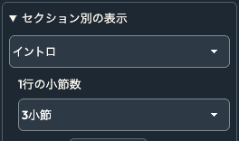
②の設定例。他のセクションは全体の設定に従い、イントロだけが1行3小節になります。
- 1行の小節数
- 自動では譜面の幅に応じて1・2・4小節になります。手動では最大8小節を指定できます。譜面例で行を選ぶと、その行の枠数と置く小節数を個別に変えられます。
- セクションごとの変更
- 「セクション別の表示」で対象を選び、段組み、各行の表示、書体・色・サイズを調整します。未変更の項目は全体設定に従います。各行の「全体に戻す」でその行だけ戻せます。段組みも含めて戻すときは「このセクションを全体設定に戻す」を押します。譜面のセクション名の⚙はこの設定への近道です。
- 譜面の各要素
- チェックで表示、Aaで書体、色見本で色、スライダーで文字やフォームの大きさを指定します。歌詞・メロディの字間、縦の罫線、ハイライトの透過率や再生棒の色も見本で確認できます。よく使う組み合わせは表示プリセットとして保存します。
- ズーム・全画面
- −／＋、トラックパッドのピンチ、Ctrl／⌘＋ホイールで読みやすい倍率にします。倍率表示を押すと標準に戻ります。全画面でも表示設定に進めます。
再生と練習

下の「再生」で始め、再生中のボタンで止めます。演奏中は小節がハイライトされ、棒が拍の位置を示します。セクション横の「ここから」でその位置から再生できます。複数小節を選ぶと選んだ範囲を練習できます。繰り返しボタンで反復を切り替えます。
下のBPMは練習用です。曲自体のテンポを変更する場合は「曲情報」を開きます。「コード」「メロディ」「メトロノーム」にチェックを入れたパートだけが鳴ります。画面幅が狭いときは「パート」を押して選びます。「音設定」でパート音量やカウントインを調整します。小節編集中は上部の再生で編集中の範囲を試聴できます。
音設定
譜面下の再生バーで「音設定」を開きます。たとえば伴奏に合わせて歌う練習なら、メロディだけ小さくして聴けます。
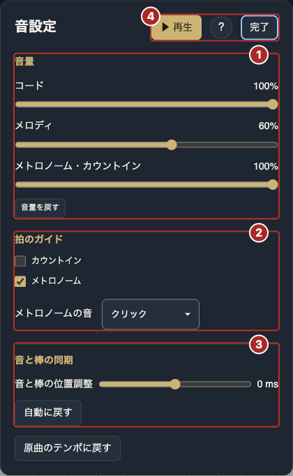
- 鳴らすパートを選び、音量を合わせます。 チェックは下の再生カードと連動します。 図ではメロディを60%にしています。0%でそのパートだけ消音し、「音量を戻す」で3つとも100%に戻せます。
- 拍のガイドを選びます。 「カウントイン」は再生前の1小節だけ（ループでは初回のみ）、「メトロノーム」は再生中の各拍で鳴ります。カウントインを使うときは「再生する音」の「メトロノーム」もオンにします。「メトロノームの音」で音色を選べます。
- 音と再生棒のずれが気になるときに調整します。 「音と棒の位置調整」で棒を早めたり遅らせたりできます。「自動に戻す」で補正をリセットできます。
- 「再生」で聴き、「完了」で戻ります。 音量は再生中にも変えられます。拍のガイドを切り替えたら、次の再生で確かめてください。
音設定はこのブラウザに記憶されます。曲のJSONやクラウド同期の対象には含まれません。
書き出し・印刷・ビューワー
- 後から編集する
- メニューのJSON書き出しで編集用のファイルを保管します。再び編集するときは譜面クルーズの「ファイルを開く(JSON)」を選びます。
- ビューワーで演奏する
- 「譜面ビューワーに書き出す」で名前とフォルダを指定し、ビューワーのライブラリに追加します。完了画面で「譜面ビューワーに移動」を押して開きます。演奏用のファイルを受け取った場合は、クルーズポートの譜面ビューワーで「ファイルを開く」を押し、再生・停止します。表示設定も引き継がれます。
- 紙・PDF
- 紙面の段組み、フォーム、歌詞などを表示設定で整え、「印刷」でプリンターや用紙を選びます。PDFで共有する場合は「PDFとして保存」を使います。配布前にページの区切りと文字の読みやすさを確認してください。
キー操作・困ったとき
- 隣のマスに進む
- Enter／Tabで次へ、Shift＋Tabで前へ。左右キーはマスの移動、文字編集中はカーソル移動です。行の移動は上下キー、ストローク行ではShift＋上下キーです。
- 保存・取り消し
- ⌘／Ctrl＋Sで保存、⌘／Ctrl＋Zで取り消し、Shiftを加えてやり直し。日本語入力中は変換を確定します。
- Spaceで休符になった
- ストローク入力中はSpaceが休符です。試聴には編集画面の再生ボタンを使います。
- 操作ボタンが見当たらない
- 小節操作は小節を選ぶと表示されます。ツールを以前減らした場合は「…」→「すべて表示」で復元できます。画面幅が狭いときはツール列を横にスクロールします。
- 同じ曲でも一部だけ表示が違う
- セクション名の⚙から個別設定を確認します。段組みだけが違う場合は詳細設定の見本でその行を選び、行の個別指定も確認します。